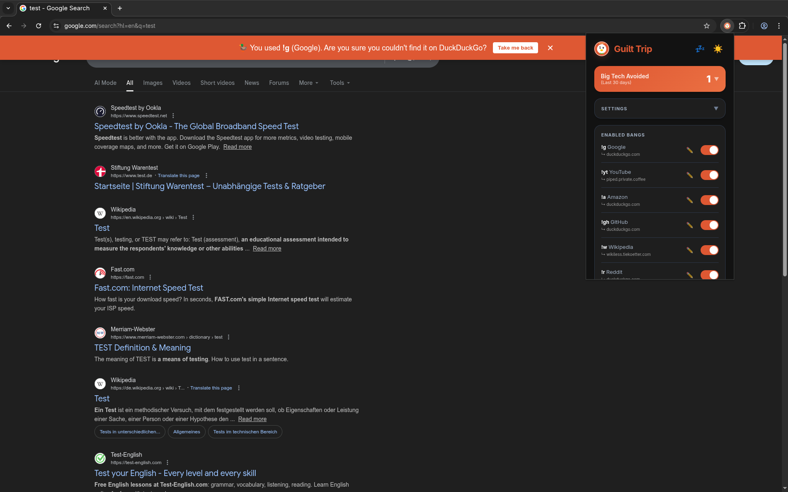

🛑
Stop the Impulse
Catches you when you type !yt or !g and asks: "Do you really need to go there?"
🛡️
Privacy First
Redirects to frontends like Piped, Wikiless, and Libreddit instead of tracking-heavy sites.
⚙️
Customizable
Set Strict Mode to skip the banner, configure your own instance URLs, or Snooze when you just need to get work done.
Supported Bangs
!g → Google
!yt → Piped
!a → DDG Products
!w → Wikiless
!r → Libreddit
!gh → DDG Code